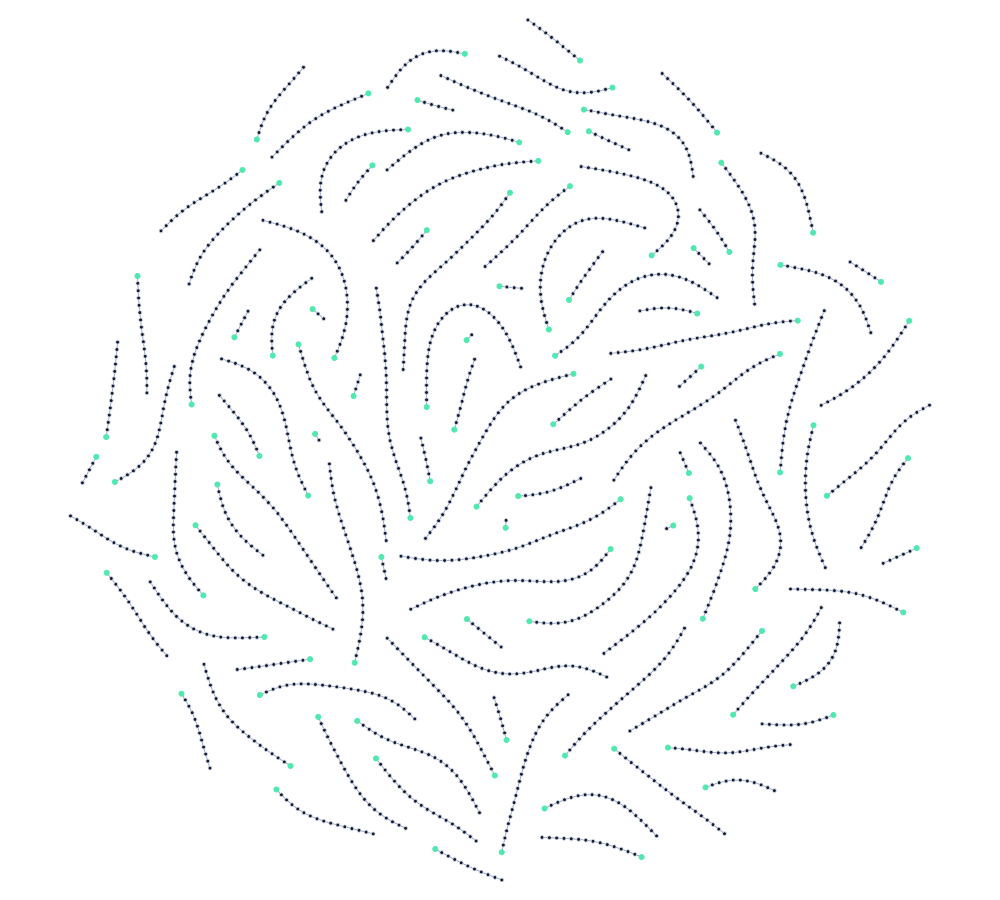

Read-only snapshot of the shared ecc2k-130
distinguished-point table. The browser loads the live feed from the
campaign store and the GitHub Pages copy together, and keeps whichever
fields each one actually has: counts from the store, walk rate from the
snapshot history when the live document is missing it. Refresh is every
minute. The page publishes counts only — walk
coefficients (a, b), point keys and seeds stay in
the private store and never reach this page.
Rho has no progress to draw: a walk collides or it does not, and what
accumulates is the chance that it already has. After
W iterations that chance is
1 − exp(−πW²/4E²), the birthday
bound with its mean set to the expected cost
E = 2^60.9 (Bailey et al.), so the curve's
mean is the expectation the ETA below counts to. It assumes the walk
behaves as a random map, which is the heuristic behind that figure.
The solid curve is the fleet at the measured rate; the dashed one is
the same fleet doubled. The median is not a deadline: half of all
campaigns like this one finish after it.
Iterations per second, walking now
—
ETA to the expected collision cost
—
Where these three numbers come from. Every walker checkpoints its own
iteration count every 600 seconds; the campaign sums those checkpoints
and publishes the total, so the operation figure above is counted by
the workers rather than inferred from the points they reported. The
rate is that total's increase between two of these snapshots divided by
the time between them — a measurement of the fleet that was
running over the window named beside it, not a projection — and
the ETA is the work still expected at exactly that rate. A collision is
expected after 2^60.9 operations (Bailey et
al., Breaking ECC2K-130); it is an expectation, not a deadline.
When a snapshot carries no iteration total, the operation figure falls
back to the point count times 2^25.27
iterations per point, the interval for HW(x) ≤
34, and says so: that fallback reads low, because the campaign
distinguishes at the sparser HW(x) ≤ 32
and walks about 2^28.4 iterations per point.
Both figures belong to one campaign's distinguishing rule, so neither
is shown for anything but ecc2k-130.
Headline counts
Distinguished points
—
Last hour
—
Last 24 hours
—
GPUs running
—
Collisions
—
Distinguished points per hour
One bar per UTC hour over the window the snapshot covers. Hours in which
no point was recorded are drawn as gaps at zero rather than omitted, so
the spacing is real time and an outage looks like an outage.
Hourly buckets as a table
Distinguished points recorded in each UTC hour
Hour (UTC)
DPs
Cumulative distinguished points
Total table size at each published snapshot, from
history.json. The series starts when this page
began publishing, so it is a record of the public feed and not of the
campaign before it.
What the walk builds
Real walks on the challenge curve. Each walk steps from point to point
by a rule that depends only on the point it is standing on, so two
walks that ever land on the same orbit take every step after it
together, and the search grows a forest whose roots are the
distinguished points the walkers report and the table above counts. A
collision is two walks arriving at the same distinguished point from
different starts. On ECC2K-130 that has not happened: every trail below
is on its own, and the day two of them join is the day the campaign
ends.

106 walks of the ECC2K-130
client on the Certicom ECC2K-130 curve, distinguished at weight
34 as the campaign is: the
seeds of its first 256 reported
points replayed with the client's own kernel, keeping every walk that
reached its point within 65,536
iterations. Each hollow node is the orbit the walk stood on every
2,048 iterations,
1,817 nodes over
3,400,768 iterations in all, the
longest trail 64,596; each filled
node one of the 106 distinguished
points reached, and 0
meetings between trails. A walk on this curve is expected to take
2^25.27 iterations to reach a point, so what
is drawn is the short end of the distribution, the only end short
enough to draw. Every trail is checked against the record the client
wrote for it, the first few against the scalar reference as well, and
the orbits are named by hash on the page because a distinguished
point's orbit is its key. The figure regenerates from the committed
trails with
walk_forest.py.
With JavaScript the figure is a graph: drag to pan, wheel or pinch to
zoom, hover a node for the walk it is on and how far along, click one
to light every path through it to its distinguished point, and play
the walks to watch them set off for theirs. The second forest in the
menu is the GF(2^23) test curve, small
enough that trails meet, with the same iteration function and
distinguishing test.
Workers
Lifetime distinguished-point contributors, not the GPUs still walking.
The headline card above is the live checkpoint count
(walking_slots); this table is every
worker_id that has ever reported a point. A
row is marked active when its most recent point is inside the last hour
of the snapshot.
Distinguished points contributed per worker
worker_id
DPs
share
first point
last point
Contribute compute
The table above is not a closed fleet: the walk is a Pollard rho over
independent seed spaces, so any machine that walks its own seeds adds
points to the same search. Two ways in — one that pays for the points,
one that does not.
Paid piecework
Run a cairn node
cairn pays for
verified outputs and never for claimed effort. Under its
rho
piecework design the paid artifact is one distinguished point
(x, y, a, b) with
a·P + b·Q = (x, y): it costs
2^d group operations to find and two scalar
multiplications to check, so the proof of work is the work.
curl -fsSL https://github.com/aburan28/cairn/releases/latest/download/install.sh | sh
cairn run
The installer detects the platform, checks the tarball against the
published .sha256 and puts one binary in
~/.local/bin. That checksum comes from the
same server as the tarball, so it catches a corrupted download and
nothing else — there is no signing key yet. No Windows build:
the verifier sandbox is seatbelt and bubblewrap.
What is and is not posted. The rho objectives that
ship today are prime-field — a 50-bit rung anyone can finish,
and Certicom's ECCp-131 — and the contributor for them is
crypto cryptanalysis rho-collab work --cairn.
An ECC2K-130 objective needs a
GF(2^131) checker, which
cairn
does not carry yet, so points on this campaign are not
payable through cairn until it does. Install the node now to have it
ready, and to work the rungs that are live.
Unpaid, and live today
Run the ECC2K-130 client
The client that produced every point on this page is in the
repository: bitsliced Pollard rho on the Frobenius classes
{±τ^i P}, with the field
arithmetic emitted and self-checked by a code generator. One RTX PRO
6000 walks 14.1 billion iterations/s while
collecting at HW(x) ≤ 34.
git clone https://github.com/aburan28/crypto
cd crypto/ecc2k130
make test # 52 checks, GF(2^23) … GF(2^131)
make gpu
./ecc2k130 --curve 131 --run-id N \
--dp-file dps.bin --checkpoint state.ck
Every walk seed is derived from that 16-bit
--run-id, so two contributors who pick
different ids never repeat each other's trail and their corpora merge
by reload. On rented hardware
./run.sh drives the same binary through
Modal. A --curve 131 run does not finish —
2^60.9 iterations is decades of GPU time, so
it is collection, not a solve. Read
ecc2k130/README.md
for the client and
ecc2k130/aws/README.md
for the fleet, the slot registry and what the expected
2^60.9 costs.
Campaign
Campaign identifiers and timestamps
Snapshot history
Every snapshot the publishing Action has posted in the last seven
days, newest first. It runs every 3 minutes. The iterations column is
the walkers' checkpoint sum at each snapshot, so the rate at the top of
the page is the difference between two of these rows over the time
between them — the arithmetic is here to be redone.